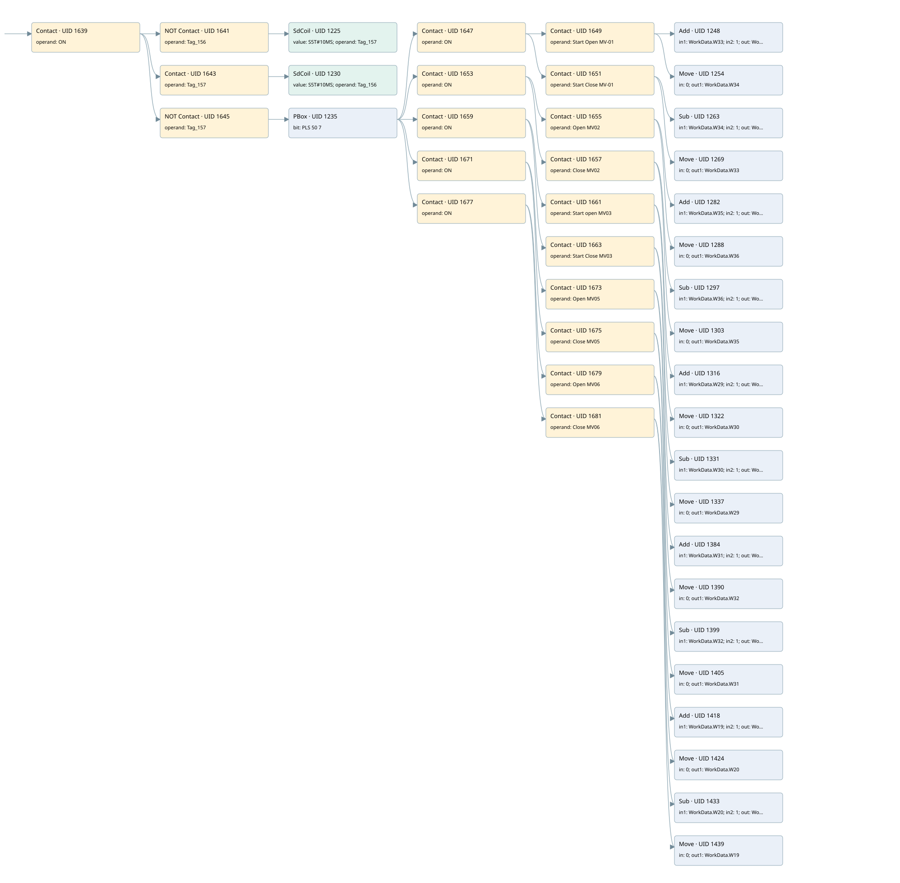

motorized valve pulse generator for rotation control
valve control loop · 검색 색인 순서 12 · 원본 내부 NID 추정 11
백업 PLF 원본의 2928046 바이트 위치에서 복원한 XML. 검색 문서 1713의 객체 키 161022008412000000000000와 연결했다. 이름 해석 74/74개. 남은 RefId는 상수 또는 미해석 참조다.
연결 구조 다시 그리기
원본 Part/PCon/Wire를 이용한 연결도다. TIA 화면의 래더 배치 또는 실행 결과를 재현한 그림은 아니다. 핀 연결은 아래 표와 원본 XML을 기준으로 읽는다. 노드 위에 마우스를 두면 피연산자 이름을 볼 수 있다.

접점·코일·블록과 피연산자
| Part UID | Gate | Negated 핀 | 연결 피연산자 |
|---|---|---|---|
| 1639 | Contact | operand = ON | |
| 1641 | Contact | operand | operand = Tag_156 |
| 1225 | SdCoil | value = S5T#10MS; operand = Tag_157 | |
| 1643 | Contact | operand = Tag_157 | |
| 1230 | SdCoil | value = S5T#10MS; operand = Tag_156 | |
| 1645 | Contact | operand | operand = Tag_157 |
| 1235 | PBox | bit = PLS 50 7 | |
| 1647 | Contact | operand = ON | |
| 1649 | Contact | operand = Start Open MV-01 | |
| 1248 | Add | in1 = WorkData.W33; in2 = 1; out = WorkData.W33 | |
| 1254 | Move | in = 0; out1 = WorkData.W34 | |
| 1651 | Contact | operand = Start Close MV-01 | |
| 1263 | Sub | in1 = WorkData.W34; in2 = 1; out = WorkData.W34 | |
| 1269 | Move | in = 0; out1 = WorkData.W33 | |
| 1653 | Contact | operand = ON | |
| 1655 | Contact | operand = Open MV02 | |
| 1282 | Add | in1 = WorkData.W35; in2 = 1; out = WorkData.W35 | |
| 1288 | Move | in = 0; out1 = WorkData.W36 | |
| 1657 | Contact | operand = Close MV02 | |
| 1297 | Sub | in1 = WorkData.W36; in2 = 1; out = WorkData.W36 | |
| 1303 | Move | in = 0; out1 = WorkData.W35 | |
| 1659 | Contact | operand = ON | |
| 1661 | Contact | operand = Start open MV03 | |
| 1316 | Add | in1 = WorkData.W29; in2 = 1; out = WorkData.W29 | |
| 1322 | Move | in = 0; out1 = WorkData.W30 | |
| 1663 | Contact | operand = Start Close MV03 | |
| 1331 | Sub | in1 = WorkData.W30; in2 = 1; out = WorkData.W30 | |
| 1337 | Move | in = 0; out1 = WorkData.W29 | |
| 1671 | Contact | operand = ON | |
| 1673 | Contact | operand = Open MV05 | |
| 1384 | Add | in1 = WorkData.W31; in2 = 1; out = WorkData.W31 | |
| 1390 | Move | in = 0; out1 = WorkData.W32 | |
| 1675 | Contact | operand = Close MV05 | |
| 1399 | Sub | in1 = WorkData.W32; in2 = 1; out = WorkData.W32 | |
| 1405 | Move | in = 0; out1 = WorkData.W31 | |
| 1677 | Contact | operand = ON | |
| 1679 | Contact | operand = Open MV06 | |
| 1418 | Add | in1 = WorkData.W19; in2 = 1; out = WorkData.W19 | |
| 1424 | Move | in = 0; out1 = WorkData.W20 | |
| 1681 | Contact | operand = Close MV06 | |
| 1433 | Sub | in1 = WorkData.W20; in2 = 1; out = WorkData.W20 | |
| 1439 | Move | in = 0; out1 = WorkData.W19 |
접점 경로를 펼친 조건식
Contact·O/A·비교기의 원본 연결을 읽기 쉽게 펼친 보조 해석이다. POWER는 전원 레일 시작을 뜻한다. 호출 블록·에지·타이머의 내부 동작과 다중 쓰기 순서는 이 표로 실행 검증하지 않았다. 미해석 핀과 RefId는 원문 연결표에서 확인한다.
| UID | 동작 | 대상 | 원본 접점 경로 | 내용 |
|---|---|---|---|---|
| 1225 | SdCoil | Tag_157 | (ON AND NOT [Tag_156]) | 시간 동작 SdCoil; 타이머 의미 추가 확인 / 시간 인자 S5T#10MS |
| 1230 | SdCoil | Tag_156 | (ON AND Tag_157) | 시간 동작 SdCoil; 타이머 의미 추가 확인 / 시간 인자 S5T#10MS |
| 1254 | Move | WorkData.W34 | ((PBox UID 1235.out (블록 동작 확인) AND ON) AND Start Open MV-01) | Move 입력 0 |
| 1269 | Move | WorkData.W33 | ((PBox UID 1235.out (블록 동작 확인) AND ON) AND Start Close MV-01) | Move 입력 0 |
| 1288 | Move | WorkData.W36 | ((PBox UID 1235.out (블록 동작 확인) AND ON) AND Open MV02) | Move 입력 0 |
| 1303 | Move | WorkData.W35 | ((PBox UID 1235.out (블록 동작 확인) AND ON) AND Close MV02) | Move 입력 0 |
| 1322 | Move | WorkData.W30 | ((PBox UID 1235.out (블록 동작 확인) AND ON) AND Start open MV03) | Move 입력 0 |
| 1337 | Move | WorkData.W29 | ((PBox UID 1235.out (블록 동작 확인) AND ON) AND Start Close MV03) | Move 입력 0 |
| 1390 | Move | WorkData.W32 | ((PBox UID 1235.out (블록 동작 확인) AND ON) AND Open MV05) | Move 입력 0 |
| 1405 | Move | WorkData.W31 | ((PBox UID 1235.out (블록 동작 확인) AND ON) AND Close MV05) | Move 입력 0 |
| 1424 | Move | WorkData.W20 | ((PBox UID 1235.out (블록 동작 확인) AND ON) AND Open MV06) | Move 입력 0 |
| 1439 | Move | WorkData.W19 | ((PBox UID 1235.out (블록 동작 확인) AND ON) AND Close MV06) | Move 입력 0 |
원본 배선 연결
| Wire UID | 동일 Wire 연결 끝점 |
|---|---|
| 1683 | Powerrail {} ↔ Part 1639.in |
| 1529 | ORef 1442 (ON) ↔ Part 1639.operand |
| 1640 | Part 1639.out ↔ Part 1641.in ↔ Part 1643.in ↔ Part 1645.in |
| 1531 | ORef 1444 (Tag_156) ↔ Part 1641.operand |
| 1642 | Part 1641.out ↔ Part 1225.in |
| 1530 | ORef 1443 (S5T#10MS) ↔ Part 1225.value |
| 1533 | ORef 1445 (Tag_157) ↔ Part 1225.operand |
| 1535 | ORef 1447 (Tag_157) ↔ Part 1643.operand |
| 1644 | Part 1643.out ↔ Part 1230.in |
| 1534 | ORef 1446 (S5T#10MS) ↔ Part 1230.value |
| 1537 | ORef 1448 (Tag_156) ↔ Part 1230.operand |
| 1538 | ORef 1449 (Tag_157) ↔ Part 1645.operand |
| 1646 | Part 1645.out ↔ Part 1235.in |
| 1540 | ORef 1450 (PLS 50 7) ↔ Part 1235.bit |
| 1637 | Part 1235.out ↔ Part 1647.in ↔ Part 1653.in ↔ Part 1659.in ↔ Part 1671.in ↔ Part 1677.in |
| 1541 | ORef 1451 (ON) ↔ Part 1647.operand |
| 1648 | Part 1647.out ↔ Part 1649.in ↔ Part 1651.in |
| 1542 | ORef 1452 (Start Open MV-01) ↔ Part 1649.operand |
| 1650 | Part 1649.out ↔ Part 1248.en ↔ Part 1254.en |
| 1543 | ORef 1453 (WorkData.W33) ↔ Part 1248.in1 |
| 1544 | ORef 1454 (1) ↔ Part 1248.in2 |
| 1545 | Part 1248.out ↔ ORef 1455 (WorkData.W33) |
| 1546 | ORef 1456 (0) ↔ Part 1254.in |
| 1547 | Part 1254.out1 ↔ ORef 1457 (WorkData.W34) |
| 1549 | ORef 1458 (Start Close MV-01) ↔ Part 1651.operand |
| 1652 | Part 1651.out ↔ Part 1263.en ↔ Part 1269.en |
| 1550 | ORef 1459 (WorkData.W34) ↔ Part 1263.in1 |
| 1551 | ORef 1460 (1) ↔ Part 1263.in2 |
| 1552 | Part 1263.out ↔ ORef 1461 (WorkData.W34) |
| 1553 | ORef 1462 (0) ↔ Part 1269.in |
| 1554 | Part 1269.out1 ↔ ORef 1463 (WorkData.W33) |
| 1557 | ORef 1464 (ON) ↔ Part 1653.operand |
| 1654 | Part 1653.out ↔ Part 1655.in ↔ Part 1657.in |
| 1558 | ORef 1465 (Open MV02) ↔ Part 1655.operand |
| 1656 | Part 1655.out ↔ Part 1282.en ↔ Part 1288.en |
| 1559 | ORef 1466 (WorkData.W35) ↔ Part 1282.in1 |
| 1560 | ORef 1467 (1) ↔ Part 1282.in2 |
| 1561 | Part 1282.out ↔ ORef 1468 (WorkData.W35) |
| 1562 | ORef 1469 (0) ↔ Part 1288.in |
| 1563 | Part 1288.out1 ↔ ORef 1470 (WorkData.W36) |
| 1565 | ORef 1471 (Close MV02) ↔ Part 1657.operand |
| 1658 | Part 1657.out ↔ Part 1297.en ↔ Part 1303.en |
| 1566 | ORef 1472 (WorkData.W36) ↔ Part 1297.in1 |
| 1567 | ORef 1473 (1) ↔ Part 1297.in2 |
| 1568 | Part 1297.out ↔ ORef 1474 (WorkData.W36) |
| 1569 | ORef 1475 (0) ↔ Part 1303.in |
| 1570 | Part 1303.out1 ↔ ORef 1476 (WorkData.W35) |
| 1573 | ORef 1477 (ON) ↔ Part 1659.operand |
| 1660 | Part 1659.out ↔ Part 1661.in ↔ Part 1663.in |
| 1574 | ORef 1478 (Start open MV03) ↔ Part 1661.operand |
| 1662 | Part 1661.out ↔ Part 1316.en ↔ Part 1322.en |
| 1575 | ORef 1479 (WorkData.W29) ↔ Part 1316.in1 |
| 1576 | ORef 1480 (1) ↔ Part 1316.in2 |
| 1577 | Part 1316.out ↔ ORef 1481 (WorkData.W29) |
| 1578 | ORef 1482 (0) ↔ Part 1322.in |
| 1579 | Part 1322.out1 ↔ ORef 1483 (WorkData.W30) |
| 1581 | ORef 1484 (Start Close MV03) ↔ Part 1663.operand |
| 1664 | Part 1663.out ↔ Part 1331.en ↔ Part 1337.en |
| 1582 | ORef 1485 (WorkData.W30) ↔ Part 1331.in1 |
| 1583 | ORef 1486 (1) ↔ Part 1331.in2 |
| 1584 | Part 1331.out ↔ ORef 1487 (WorkData.W30) |
| 1585 | ORef 1488 (0) ↔ Part 1337.in |
| 1586 | Part 1337.out1 ↔ ORef 1489 (WorkData.W29) |
| 1605 | ORef 1503 (ON) ↔ Part 1671.operand |
| 1672 | Part 1671.out ↔ Part 1673.in ↔ Part 1675.in |
| 1606 | ORef 1504 (Open MV05) ↔ Part 1673.operand |
| 1674 | Part 1673.out ↔ Part 1384.en ↔ Part 1390.en |
| 1607 | ORef 1505 (WorkData.W31) ↔ Part 1384.in1 |
| 1608 | ORef 1506 (1) ↔ Part 1384.in2 |
| 1609 | Part 1384.out ↔ ORef 1507 (WorkData.W31) |
| 1610 | ORef 1508 (0) ↔ Part 1390.in |
| 1611 | Part 1390.out1 ↔ ORef 1509 (WorkData.W32) |
| 1613 | ORef 1510 (Close MV05) ↔ Part 1675.operand |
| 1676 | Part 1675.out ↔ Part 1399.en ↔ Part 1405.en |
| 1614 | ORef 1511 (WorkData.W32) ↔ Part 1399.in1 |
| 1615 | ORef 1512 (1) ↔ Part 1399.in2 |
| 1616 | Part 1399.out ↔ ORef 1513 (WorkData.W32) |
| 1617 | ORef 1514 (0) ↔ Part 1405.in |
| 1618 | Part 1405.out1 ↔ ORef 1515 (WorkData.W31) |
| 1621 | ORef 1516 (ON) ↔ Part 1677.operand |
| 1678 | Part 1677.out ↔ Part 1679.in ↔ Part 1681.in |
| 1622 | ORef 1517 (Open MV06) ↔ Part 1679.operand |
| 1680 | Part 1679.out ↔ Part 1418.en ↔ Part 1424.en |
| 1623 | ORef 1518 (WorkData.W19) ↔ Part 1418.in1 |
| 1624 | ORef 1519 (1) ↔ Part 1418.in2 |
| 1625 | Part 1418.out ↔ ORef 1520 (WorkData.W19) |
| 1626 | ORef 1521 (0) ↔ Part 1424.in |
| 1627 | Part 1424.out1 ↔ ORef 1522 (WorkData.W20) |
| 1629 | ORef 1523 (Close MV06) ↔ Part 1681.operand |
| 1682 | Part 1681.out ↔ Part 1433.en ↔ Part 1439.en |
| 1630 | ORef 1524 (WorkData.W20) ↔ Part 1433.in1 |
| 1631 | ORef 1525 (1) ↔ Part 1433.in2 |
| 1632 | Part 1433.out ↔ ORef 1526 (WorkData.W20) |
| 1633 | ORef 1527 (0) ↔ Part 1439.in |
| 1634 | Part 1439.out1 ↔ ORef 1528 (WorkData.W19) |
식별자 해석 근거 74개
| ORef UID | RefId | 이름 | IdentXmlPart 파일 | 해석 방법 |
|---|---|---|---|---|
| 1442 | 1 | ON | 0617-IdentXmlPart.xml | UID/RID + search-text + NID agreement |
| 1444 | 102 | Tag_156 | 0617-IdentXmlPart.xml | UID/RID + search-text + NID agreement |
| 1445 | 104 | Tag_157 | 0617-IdentXmlPart.xml | UID/RID + search-text + NID agreement |
| 1443 | 103 | S5T#10MS | 0620-IdentXmlPart.xml | literal candidate: UID/RID/NID + nearby named declarations + search-text agreement |
| 1447 | 104 | Tag_157 | 0617-IdentXmlPart.xml | UID/RID + search-text + NID agreement |
| 1448 | 102 | Tag_156 | 0617-IdentXmlPart.xml | UID/RID + search-text + NID agreement |
| 1446 | 103 | S5T#10MS | 0620-IdentXmlPart.xml | literal candidate: UID/RID/NID + nearby named declarations + search-text agreement |
| 1449 | 104 | Tag_157 | 0617-IdentXmlPart.xml | UID/RID + search-text + NID agreement |
| 1450 | 105 | PLS 50 7 | 0617-IdentXmlPart.xml | UID/RID + search-text + NID agreement |
| 1451 | 1 | ON | 0617-IdentXmlPart.xml | UID/RID + search-text + NID agreement |
| 1452 | 15 | Start Open MV-01 | 0617-IdentXmlPart.xml | UID/RID + search-text + NID agreement |
| 1453 | 109 | WorkData.W33 | 0619-IdentXmlPart.xml | UID/RID + search-text + NID agreement |
| 1454 | 36 | 1 | 0620-IdentXmlPart.xml | literal candidate: UID/RID/NID + nearby named declarations + search-text agreement |
| 1455 | 109 | WorkData.W33 | 0619-IdentXmlPart.xml | UID/RID + search-text + NID agreement |
| 1456 | 38 | 0 | 0620-IdentXmlPart.xml | literal candidate: UID/RID/NID + nearby named declarations + search-text agreement |
| 1457 | 111 | WorkData.W34 | 0619-IdentXmlPart.xml | UID/RID + search-text + NID agreement |
| 1458 | 14 | Start Close MV-01 | 0617-IdentXmlPart.xml | UID/RID + search-text + NID agreement |
| 1459 | 111 | WorkData.W34 | 0619-IdentXmlPart.xml | UID/RID + search-text + NID agreement |
| 1460 | 36 | 1 | 0620-IdentXmlPart.xml | literal candidate: UID/RID/NID + nearby named declarations + search-text agreement |
| 1461 | 111 | WorkData.W34 | 0619-IdentXmlPart.xml | UID/RID + search-text + NID agreement |
| 1462 | 38 | 0 | 0620-IdentXmlPart.xml | literal candidate: UID/RID/NID + nearby named declarations + search-text agreement |
| 1463 | 109 | WorkData.W33 | 0619-IdentXmlPart.xml | UID/RID + search-text + NID agreement |
| 1464 | 1 | ON | 0617-IdentXmlPart.xml | UID/RID + search-text + NID agreement |
| 1465 | 25 | Open MV02 | 0617-IdentXmlPart.xml | UID/RID + search-text + NID agreement |
| 1466 | 115 | WorkData.W35 | 0619-IdentXmlPart.xml | UID/RID + search-text + NID agreement |
| 1467 | 36 | 1 | 0620-IdentXmlPart.xml | literal candidate: UID/RID/NID + nearby named declarations + search-text agreement |
| 1468 | 115 | WorkData.W35 | 0619-IdentXmlPart.xml | UID/RID + search-text + NID agreement |
| 1469 | 38 | 0 | 0620-IdentXmlPart.xml | literal candidate: UID/RID/NID + nearby named declarations + search-text agreement |
| 1470 | 117 | WorkData.W36 | 0619-IdentXmlPart.xml | UID/RID + search-text + NID agreement |
| 1471 | 24 | Close MV02 | 0617-IdentXmlPart.xml | UID/RID + search-text + NID agreement |
| 1472 | 117 | WorkData.W36 | 0619-IdentXmlPart.xml | UID/RID + search-text + NID agreement |
| 1473 | 36 | 1 | 0620-IdentXmlPart.xml | literal candidate: UID/RID/NID + nearby named declarations + search-text agreement |
| 1474 | 117 | WorkData.W36 | 0619-IdentXmlPart.xml | UID/RID + search-text + NID agreement |
| 1475 | 38 | 0 | 0620-IdentXmlPart.xml | literal candidate: UID/RID/NID + nearby named declarations + search-text agreement |
| 1476 | 115 | WorkData.W35 | 0619-IdentXmlPart.xml | UID/RID + search-text + NID agreement |
| 1477 | 1 | ON | 0617-IdentXmlPart.xml | UID/RID + search-text + NID agreement |
| 1478 | 47 | Start open MV03 | 0617-IdentXmlPart.xml | UID/RID + search-text + NID agreement |
| 1479 | 121 | WorkData.W29 | 0619-IdentXmlPart.xml | UID/RID + search-text + NID agreement |
| 1480 | 36 | 1 | 0620-IdentXmlPart.xml | literal candidate: UID/RID/NID + nearby named declarations + search-text agreement |
| 1481 | 121 | WorkData.W29 | 0619-IdentXmlPart.xml | UID/RID + search-text + NID agreement |
| 1482 | 38 | 0 | 0620-IdentXmlPart.xml | literal candidate: UID/RID/NID + nearby named declarations + search-text agreement |
| 1483 | 123 | WorkData.W30 | 0619-IdentXmlPart.xml | UID/RID + search-text + NID agreement |
| 1484 | 48 | Start Close MV03 | 0617-IdentXmlPart.xml | UID/RID + search-text + NID agreement |
| 1485 | 123 | WorkData.W30 | 0619-IdentXmlPart.xml | UID/RID + search-text + NID agreement |
| 1486 | 36 | 1 | 0620-IdentXmlPart.xml | literal candidate: UID/RID/NID + nearby named declarations + search-text agreement |
| 1487 | 123 | WorkData.W30 | 0619-IdentXmlPart.xml | UID/RID + search-text + NID agreement |
| 1488 | 38 | 0 | 0620-IdentXmlPart.xml | literal candidate: UID/RID/NID + nearby named declarations + search-text agreement |
| 1489 | 121 | WorkData.W29 | 0619-IdentXmlPart.xml | UID/RID + search-text + NID agreement |
| 1503 | 1 | ON | 0617-IdentXmlPart.xml | UID/RID + search-text + NID agreement |
| 1504 | 69 | Open MV05 | 0617-IdentXmlPart.xml | UID/RID + search-text + NID agreement |
| 1505 | 134 | WorkData.W31 | 0619-IdentXmlPart.xml | UID/RID + search-text + NID agreement |
| 1506 | 36 | 1 | 0620-IdentXmlPart.xml | literal candidate: UID/RID/NID + nearby named declarations + search-text agreement |
| 1507 | 134 | WorkData.W31 | 0619-IdentXmlPart.xml | UID/RID + search-text + NID agreement |
| 1508 | 38 | 0 | 0620-IdentXmlPart.xml | literal candidate: UID/RID/NID + nearby named declarations + search-text agreement |
| 1509 | 136 | WorkData.W32 | 0619-IdentXmlPart.xml | UID/RID + search-text + NID agreement |
| 1510 | 68 | Close MV05 | 0617-IdentXmlPart.xml | UID/RID + search-text + NID agreement |
| 1511 | 136 | WorkData.W32 | 0619-IdentXmlPart.xml | UID/RID + search-text + NID agreement |
| 1512 | 36 | 1 | 0620-IdentXmlPart.xml | literal candidate: UID/RID/NID + nearby named declarations + search-text agreement |
| 1513 | 136 | WorkData.W32 | 0619-IdentXmlPart.xml | UID/RID + search-text + NID agreement |
| 1514 | 38 | 0 | 0620-IdentXmlPart.xml | literal candidate: UID/RID/NID + nearby named declarations + search-text agreement |
| 1515 | 134 | WorkData.W31 | 0619-IdentXmlPart.xml | UID/RID + search-text + NID agreement |
| 1516 | 1 | ON | 0617-IdentXmlPart.xml | UID/RID + search-text + NID agreement |
| 1517 | 98 | Open MV06 | 0617-IdentXmlPart.xml | UID/RID + search-text + NID agreement |
| 1518 | 140 | WorkData.W19 | 0619-IdentXmlPart.xml | UID/RID + search-text + NID agreement |
| 1519 | 36 | 1 | 0620-IdentXmlPart.xml | literal candidate: UID/RID/NID + nearby named declarations + search-text agreement |
| 1520 | 140 | WorkData.W19 | 0619-IdentXmlPart.xml | UID/RID + search-text + NID agreement |
| 1521 | 38 | 0 | 0620-IdentXmlPart.xml | literal candidate: UID/RID/NID + nearby named declarations + search-text agreement |
| 1522 | 142 | WorkData.W20 | 0619-IdentXmlPart.xml | UID/RID + search-text + NID agreement |
| 1523 | 97 | Close MV06 | 0617-IdentXmlPart.xml | UID/RID + search-text + NID agreement |
| 1524 | 142 | WorkData.W20 | 0619-IdentXmlPart.xml | UID/RID + search-text + NID agreement |
| 1525 | 36 | 1 | 0620-IdentXmlPart.xml | literal candidate: UID/RID/NID + nearby named declarations + search-text agreement |
| 1526 | 142 | WorkData.W20 | 0619-IdentXmlPart.xml | UID/RID + search-text + NID agreement |
| 1527 | 38 | 0 | 0620-IdentXmlPart.xml | literal candidate: UID/RID/NID + nearby named declarations + search-text agreement |
| 1528 | 140 | WorkData.W19 | 0619-IdentXmlPart.xml | UID/RID + search-text + NID agreement |
검색 코드 보조 자료
참조 명칭을 찾기 위한 자료이며 실행 순서나 AND/OR 관계는 위 연결표로 확인한다.
"on" "tag_156" "tag_157" s5t#10ms "tag_157" "tag_156" s5t#10ms "tag_157" "pls 50 7" "on" "start open mv-01" add "workdata".w33 1 "on" "open mv02" add "workdata".w35 1 "close mv02" sub "workdata".w36 1 move 0 "workdata".w35 "workdata".w36 move 0 "workdata".w36 "workdata".w35 "on" "start open mv03" add "workdata".w29 1 "start close mv03" sub "workdata".w30 1 move 0 "workdata".w29 "workdata".w30 move 0 "workdata".w30 "workdata".w29 "on" "open mv05" add "workdata".w31 1 "close mv05" sub "workdata".w32 1 move 0 "workdata".w31 "workdata".w32 move 0 "workdata".w32 "workdata".w31 "on" "open mv06" add "workdata".w19 1 "close mv06" sub "workdata".w20 1 move 0 "workdata".w19 "workdata".w20 move 0 "workdata".w20 "workdata".w19 "start close mv-01" sub "workdata".w34 1 move 0 "workdata".w33 "workdata".w34 move 0 "workdata".w34 "workdata".w33